수질환경기사 (2016-08-21 기출문제)
1과목: 수질오염개론
1. 150kL/day의 분뇨를 포기하여 BOD의 20%를 제거하였다. BOD 1kg을 제거하는데 필요한 공기공급량이 60m3 이라 했을 때 시간당 공기공급량(m3)은? (단, 연속포기, 분뇨의 BOD는 20000mg/L이다.)
- 100
- 500
- 1000
- 1500
(정답률: 71%)

2. 물의 물리적 특성과 이와 관련된 용어의 설명으로 틀린 것은?
- 물의 비중은 4℃에서 1.0이다.
- 점성계수란 전단응력에 대한 유체의 거리에 대한 속도 변화율에 대한 비를 말한다.
- 표면장력은 액체표면의 분자가 액체 내부로 끌리는 힘에 기인된다.
- 동점성계수는 밀도를 점성계수로 나눈 것을 말한다.
(정답률: 79%)
3. Streeter-Phelps 식의 기본가정이 틀린 것은?
- 오염원은 점오염원
- 하상퇴적물의 유기물분해를 고려하지 않음
- 조류의 광합성은 무시, 유기물의 분해는 1차 반응
- 하천의 흐름 방향 분산을 고려
(정답률: 72%)
4. 산성강우에 대한 설명으로 틀린 것은?
- 주요원인물질은 유황산화물, 질소산화물, 염산을 들 수 있다.
- 대기오염이 혹심한 지역에 국한되는 현상으로 비교적 정확한 예보 가 가능하다.
- 초목의 잎과 토양으로부터 Ca++, Mg++, K+ 등의 용출 속도를 증가시킨다.
- 보통 대기 중 탄산가스와 평형상태에 있는 물은 약 pH 5.6의 산성을 띠고 있다.
(정답률: 84%)
5. 부조화형 호수가 아닌 것은?
- 부식 영양형 호수
- 부 영양형 호수
- 알칼리 영양형 호수
- 산 영양형 호수
(정답률: 80%)
6. 섬유상 유황박테리아로 에너지원으로 황화수소를 이용하며 균체에 황입자를 축적하는 것은?
- sphaerotilus
- zooglea
- cyanophyia
- beggiatoa
(정답률: 77%)
7. 호소의 영양상태를 평가하기 위한 Carlson지수를 산정하기 위해 요구되는 인자가 아닌 것은?
- Chlorophyll-a
- SS
- 투명도
- T-P
(정답률: 67%)
8. 유량 400000m3/day의 하천에 인구 20만명의 도시로부터 30000m3/day의 하수가 유입되고 있다. 하수 유입 전 하천의 BOD는 0.5mg/L이고, 유입 후 하천의 BOD를 2mg/L로 하기 위해서 하수처리장을 건설하려고 한다면 이 처리장의 BOD 제거효율(%)은? (단, 인구 1인당 BOD 배출량 20g/day)
- 약 84
- 약 87
- 약 90
- 약 93
(정답률: 44%)
9. glycine(CH2(NH2)COOH) 7몰을 분해하는데 필요한 이론적 산소 요구량(g O2)은? (단, 최종산물은 HNO3, CO2, H2O이다.)
- 724
- 742
- 768
- 784
(정답률: 70%)
10. 해수의 특성에 대한 설명으로 옳은 것은?
- 염분은 적도해역과 극해역이 다소 높다.
- 해수의 주요성분 농도비는 수온, 염분의 함수로 수심이 깊어질수록 증가한다.
- 해수의 Na/Ca비는 3~4정도로 담수보다 매우 높다.
- 해수 내 전체 질소 중 35% 정도는 암모니아성 질소, 유기질소 형태이다.
(정답률: 73%)
11. 미생물에 의한 영양대사과정 중 에너지 생성반응으로서 기질이 세포에 의해 이용되고, 복잡한 물질에서 간단한 물질로 분해되는 과정(작용)은?
- 이화
- 동화
- 동기화
- 환원
(정답률: 74%)
12. 이상적인 완전혼합 흐름상태를 나타내는 반응조 혼합정도의 표시로 틀린 것은?
- 분산이 1일 때
- 지체시간이 0일 때
- Morrill 지수가 1에 가까울수록
- 분산수가 무한대일 때
(정답률: 66%)
13. 분뇨에 관한 설명으로 가장 거리가 먼 것은?
- 분뇨의 영양물질은 NH4HCO3 및 (NH4)2CO3 형태로 존재하며 소화조 내의 알칼리도 유지 및 pH 강하를 막아주는 완충역할을 담당한다.
- 분과 뇨의 구성비는 약 1:8~10 정도이며 고액분리가 어렵다.
- 뇨의 경우 질소화합물은 전체 VS의 10~20% 정도 함유하고 있다.
- 분뇨의 비중은 1.0 정도이고, 점도는 비점도로써 1.2~2.2 정도이다.
(정답률: 68%)
14. 확산의 기본법칙인 Fick's 제1법칙을 가장 알맞게 설명한 것은? (단, 확산에 의해 어떤 면적요소를 통과하는 물질의 이동속도 기준)
- 이동속도는 확산물질의 조성비에 비례한다.
- 이동속도는 확산물질의 농도경사에 비례한다.
- 이동속도는 확산물질의 분자확산계수와 반비례한다.
- 이동속도는 확산물질의 유입과 유출의 차이만큼 축적된다.
(정답률: 71%)
15. 카드뮴에 대한 내용으로 틀린 것은?
- 카드뮴은 흰 은색이며 아연 정련업, 도금공업 등에서 배출된다.
- 골연화증이 유발된다.
- 만성폭로로 인한 흔한 증상은 단백뇨이다.
- 월슨씨병 증후군과 소인증이 유발된다.
(정답률: 76%)
16. 생물학적 질화 중 아질산화에 관한 설명으로 틀린 것은?
- Nitrobacter에 의해 수행된다.
- 수율은 0.04~0.13mgVSS/mgNH4+-N 정도이다.
- 관련 미생물은 독립영양성 세균이다.
- 산소가 필요하다.
(정답률: 53%)
17. 평균수온이 5℃인 저수지의 수심이 10m이고 수면적이 0.1km2 이었다. 이 저수지의 수온차가 10℃라 할 때 정상상태에서의 열전 달속도(kcal/hr)는? (단, 5℃에서의 열전도도 KT =5.8kcal/[(hr·m2)(℃/m)]
- 2.9×105
- 5.8×105
- 2.9×106
- 5.8×106
(정답률: 37%)
18. 공중 위생상 중요한 방사능 물질인 스트론튬(Sr90)은 29년의 반감기를 가지고 있다. 주어진 양의 스트론튬을 90% 감소시키기 위한 저장기간(년)은? (단, 1차 반응, 자연대수 기준)
- 약 37
- 약 67
- 약 97
- 약 113
(정답률: 70%)
19. 용존산소농도를 6mg/L로 유지하기 위하여 산소섭취속도가 40mg/L·hr인 포기기를 설치하였다. 이 때 KLA값(총괄산소전달계수, hr-1)은 약 얼마인가? (단, 20℃에서 용존산소 포화농도 9.07mg/L)
- 9.0
- 10.5
- 12.3
- 13.0
(정답률: 48%)
20. 진핵세포에 관한 설명으로 틀린 것은?
- 핵막이 있다.
- 분리분열을 한다.
- 세포소기관으로 미토콘드리아, 엽록체, 액포 등이 존재한다.
- 리보솜은 80S(예외 : 미토콘드리아와 엽록체는 70S)이다.
(정답률: 69%)
2과목: 상하수도계획
21. 상향류식 경사판 침전지에 대한 설명으로 틀린 것은?
- 표면부하율은 4~9mm/min으로 한다.
- 경사각은 55~60°로 한다.
- 침강장치는 1단으로 한다.
- 침전지 내의 평균상승유속은 250mm/min이하로 한다.
(정답률: 60%)
22. 정수시설 중 플록형성지에 관한 설명으로 틀린 것은?
- 기계식교반에서 플록큐레이터(flocculator)의 주변속도는 5~10cm/sec를 표준으로 한다.
- 플록형성시간은 계획정수량에 대하여 20~40분간을 표준으로 한다.
- 직사각형이 표준이다.
- 혼화지와 침전지 사이에 위치하고 침전지에 붙여서 설치한다.
(정답률: 68%)
23. 복류수를 취수하는 집수매거의 유출단에서 매거 내의 평균유속 기준은?
- 0.3 m/sec 이하
- 0.5 m/sec 이하
- 0.8 m/sec 이하
- 1.0 m/sec 이하
(정답률: 59%)
24. 펌프의 비교회전도에 관한 설명으로 옳은 것은?
- 비교회전도가 크게 될수록 흡입성능이 나쁘고 공동현상이 발생하기 쉽다.
- 비교회전도가 크게 될수록 흡입성능은 나쁘나 공동현상이 발생하기 어렵다.
- 비교회전도가 크게 될수록 흡입성능이 좋고 공동현상이 발생하기 어렵다.
- 비교회전도가 크게 될수록 흡입성능은 좋으나 공동현상이 발생하기 쉽다.
(정답률: 66%)
25. 상수도관으로 사용되는 관종 중 스테인리스강관에 관한 특징으로 틀린 것은?
- 강인성이 뛰어나고 충격에 강하다.
- 용접접속에 시간이 걸린다.
- 라이닝이나 도장을 필요로 하지 않는다.
- 이종금속과의 절연처리가 필요 없다.
(정답률: 67%)
26. 하수관거에 관한 내용으로 틀린 것은?
- 도관은 내산 및 내알칼리성이 뛰어나고 마모에 강하며 이형관을 제조하기 쉽다.
- 폴리에틸렌관은 가볍고 취급이 용이하여 시공성은 좋으나 산, 알칼리에 약한 단점이 있다.
- 덕타일주철관은 내압성 및 내식성이 우수하다.
- 파형강관은 용융아연도금된 강판을 스파이럴형으로 제작한 강관이다.
(정답률: 68%)
27. 유역면적이 2km2 인 지역에서의 우수 유출량을 산정하기 위하여 합리식을 사용하였다. 다음 조건일 때 관거 길이 1000m인 하수관의 우수유출량(m3/sec)은? (단, 강우강도
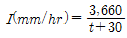
, 유입 시간 6분, 유출계수 0.7, 관내의 평균 유속 1.5m/sec)- 약 25
- 약 30
- 약 35
- 약 40
(정답률: 64%)
28. 폭 4m, 높이 3m인 개수로의 수심이 2m이고 경사가 4‰일 경우 Manning 공식에 의한 유속 (m/sec)은 약 얼마인가? (단, n = 0.014)
- 1.13
- 2.26
- 4.52
- 9.04
(정답률: 60%)
29. 상수시설인 도수관을 설계할 때의 평균유속에 관한 설명으로 ( )에 옳은 것은?
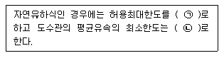
- ㉠ 3.0m/s, ㉡ 0.3m/s
- ㉠ 3.0m/s, ㉡ 1m/s
- ㉠ 5.0m/s, ㉡ 0.3m/s
- ㉠ 5.0m/s, ㉡ 1m/s
(정답률: 78%)
30. 활성슬러지법에서 사용하는 수중형 포기기에 관한 설명으로 틀린 것은?
- 저속터빈과 압력튜브 혹은 보통관을 통한 압축공기를 주입하는 형식이다.
- 혼합정도가 좋으며 결빙문제나 유체가 튀지 않는다.
- 깊은 반응조에 적용하며 운전에 융통성이 있다.
- 송풍조의 규모를 줄일 수 있어 전기료가 적게 소요된다.
(정답률: 63%)
31. 관경 1100mm, 동수경사 2.4‰, 유속 1.63m/sec, 연장 L = 30.6m 일 때 역사이폰의 손실수두(m)는 약 얼마인가? (단, 손실수 두에 관한 여유 α = 0.042m)
- 0.42
- 0.32
- 0.25
- 0.16
(정답률: 52%)
32. 펌프 회전차나 동체 속에 흐르는 압력이 국소적으로 저하하여 그 액체의 포화 증기압 이하로 떨어져 발생하는 펌프 운전 시의 비정상 현상은?
- 캐비테이션
- 서어징
- 수격 작용
- 맥놀이 현상
(정답률: 64%)
33. 상수시설인 착수정의 체류시간, 수심 기준으로 옳은 것은?
- 체류시간 : 1.5분 이상, 수심 : 2~3m 정도
- 체류시간 : 1.5분 이상, 수심 : 3~5m 정도
- 체류시간 : 3.0분 이상, 수심 : 2~3m 정도
- 체류시간 : 3.0분 이상, 수심 : 3~5m 정도
(정답률: 69%)
34. 취수시설 중 취수탑에 관한 설명으로 틀린 것은?
- 연간을 통하여 최소 수심이 2m 이상으로 하천에 설치하는 경우에는 유심이 제방에 되도록 근접한 지점으로 한다.
- 취수탑의 횡단면은 환상으로서 원형 또는 타원형으로 한다.
- 취수탑의 상단 및 관리교의 하단은 하천, 호소 및 댐의 계획최고 수위보다 높게 한다.
- 취수탑을 하천에 설치하는 경우에는 장축방향을 흐름 방향과 직각이 되도록 설치한다.
(정답률: 56%)
35. 상수도 취수 시 계획취수량의 기준은?
- 계획 1일 최대급수량의 10% 정도 증가된 수량으로 정함
- 계획 1일 평균급수량의 10% 정도 증가된 수량으로 정함
- 계획 1시간 최대급수량의 10% 정도 증가된 수량으로 정함
- 계획 1시간 평균급수량의 10% 정도 증가된 수량으로 정함
(정답률: 61%)
36. 하수도계획 목표연도는 몇 년을 원칙으로 하는가?
- 10년
- 20년
- 30년
- 40년
(정답률: 76%)
37. 하수처리시설의 이차침전지에 대한 설명으로 틀린 것은?
- 유효수심은 2.5~4m를 표준으로 한다.
- 이차침전지의 고형물부하율은 40~125kg/m2·d로 한다.
- 침전시간은 계획1일 최대오수량에 따라 정하며 일반적으로 6~8시간으로 한다.
- 침전지 수면의 여유고는 40~60cm 정도로 한다.
(정답률: 42%)
38. 수격작용(water hammer)을 방지 또는 줄이는 방법이라 할 수 없는 것은?
- 펌프에 fly wheel을 붙여 펌프의 관성을 증가시킨다.
- 흡입측 관로에 압력조절수조(surge tank)를 설치하여 부압을 유지 시킨다.
- 펌프 토출구 부근에 공기탱크를 두거나 부압발생지점에 흡기밸브를 설치하여 압력강하시 공기를 넣어준다.
- 관내유속을 낮추거나 관거상황을 변경한다.
(정답률: 47%)
39. 배수관로 상에 유리관을 세웠을 때 다음 그림과 같은 상태였다. 이 때 배수관 내의 유속(m/sec)은? (단, 수면의 차이는 10cm)
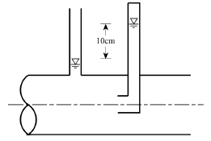
- 1.0
- 1.4
- 1.8
- 2.2
(정답률: 50%)
40. 내경 500mm의 강관 내압 1.0MPa으로 물이 흐르고 있다. 매설 강관의 최소 두께(mm)는 약 얼마인가? (단, 내압에 의한 원주방향의 응력도 110N/mm2)
- 2.27
- 4.52
- 6.54
- 9.08
(정답률: 31%)
3과목: 수질오염방지기술
41. 폐수의 화학적 성분 중 무기물이 아닌 것은?
- 염화물
- 카드뮴
- 질산성질소
- 계면활성제
(정답률: 57%)
42. 브롬화염소 살균에 관한 설명으로 틀린 것은?
- 브롬화염소는 기화속도가 낮기 때문에 염소보다 덜 유해하다.
- 부식성이 높아 염소와 관련된 배관이나 용기에 철제를 쓸 수 없다.
- 하수의 살균제로 쓰일 때 브롬화염소는 액화기체로서 주입된다.
- 브롬화염소 잔류량은 접촉조 안에서 빨리 감소하므로 주입지점에서 하수와 잘 섞어줄 필요가 있다.
(정답률: 46%)
43. 도금폐수 중 시안함유폐수의 처리에 관한 설명으로 틀린 것은?
- pH 3 이하의 산성으로 하여 공기를 격렬하게 주입시켜 HCN 가스를 대기 중에 발산시켜 제거한다.
- 시안착화합물로 변화시키는 방법은 크롬폐수와 혼합되어 있을 때의 처리에 적합하다.
- 알칼리성으로 하여 염소화하는 방법이 가장 일반적이다.
- 선택침전법은 여러 가지 폐수가 혼재되어 있을 때 적용하며 슬러지 발생량이 적은 장점이 있다.
(정답률: 40%)
44. 생물화학적 인 및 질소 제거 공법 중 인제거만을 주목적으로 개발된 공법은?
- Phostrip
- A2/O
- UCT
- Bardenpho
(정답률: 72%)
45. MLSS 농도 3000mg/L, F/M비가 0.4인 포기조에 BOD 350mg/L의 폐수가 3000m3/day로 유입되고 있다. 포기조 체류시간(hr)은?
- 5
- 7
- 9
- 11
(정답률: 60%)
46. 입자형상계수가 0.75이고 평균입경이 1.7mm인 인트라사이트가 600mm로 구성된 여층에서 물이 180L/m2·min의 속도로 흐를 때, Reynilds 수는? (단, 동점성계수는 1.003×10-6m2/sec)
- 약 2.81
- 약 3.81
- 약 4.81
- 약 5.81
(정답률: 41%)
47. 수질성분이 금속도관의 부식에 미치는 영향으로 틀린 것은?
- 암모니아는 착화물의 형성을 통해 구리, 납 등의 금속 용해도를 증가시킬 수 있다.
- 칼슘은 CaCO3로 침전하여 부식을 보호하고 부식속도를 감소시킨다.
- 마그네슘은 갈바닉 전지를 이룬 배관 상에 구멍을 야기한다.
- pH가 높으면 관을 보호하고 부식속도를 감소시킨다.
(정답률: 54%)
48. 용수 응집시설의 급속 혼합조를 설계하고자 한다. 혼합조의 설계 유량은 18480m3/day이며 정방형으로 하고 깊이는 폭의 1.25배로 한다면 교반을 위한 필요 동력(kW)은? (단, μ= 0.00131N·s/m2 , 속도 구배 = 900sec-1, 체류시간 30초)
- 약 4.3
- 약 5.6
- 약 6.8
- 약 7.3
(정답률: 46%)
49. 혐기성 소화조 운전 중 이상발포가 발생되었을 때의 대책이 아닌 것은?
- 슬러지의 유입을 줄이고 배출을 일시 중지한다.
- 소화온도를 높인다.
- 조내 교반을 중지한다.
- 스컴을 파쇄·제거한다.
(정답률: 49%)
50. 3000명의 주민이 살고 있는 도시의 우유제조공장에서 하루 평균 80m3 씩의 폐수가 배출되고 있다. 폐수의 BOD가 1000mg/L이며 인구 1인당 하루 70g의 BOD를 배출할 때 필요한 안정화지의 면적(m2)은?0 (단, 안정화지 설계 BOD부하량 2.5g/m2·day)
- 12500
- 65500
- 116000
- 148000
(정답률: 47%)
51. 역삼투장치로 하루에 600000L의 3차 처리된 유출수를 탈염하고자 한다. 다음과 같을 때, 요구되는 막 면적(m2)은? (단, 25°C에서 물질전달계수 : 0.2068L/(day•m2)(kPa))
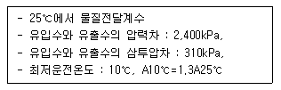
- 약 1200
- 약 1400
- 약 1600
- 약 1800
(정답률: 55%)
52. 폐수 유량이 2000m3/d, 부유 고형물의 농도가 200mg/L이다. 설계온도 20℃, 이 때의 공기 용해도는 18.7mL/L, 흡수비 0.5, 표면부하율이 120m3/(m2·d), 운전압력이 3기압이라면 반송비와 부상조의 필요한 표면적(m2)은 약 얼마인가? (단, A/S비 0.⑤, 반송이 있는 공기 부상조 기준)
- 0.82, 25
- 0.82, 30
- 0.87, 25
- 0.87, 30
(정답률: 40%)
53. 슬러지 발생량이 3000kg/d인 소화조가 있다. 슬러지는 70%의 휘발성물질을 포함하고 있으며 이중 60%가 분해된다. 슬러지 1kg이 분해될 때 50%의 메탄이 함유된 0.874m3/kg의 소화가스가 발생한다. 소화조 보온에 필요한 에너지는 530000kJ/hr이다. 발생된 에너지의 몇%가 실질적으로 소화조의 가온에 사용되었는가? (단, 메탄의 열량 35850kJ/m3, 가온장치 열효율 70%, 24시간 연속 가온 기준)
- 65%
- 74%
- 81%
- 92%
(정답률: 28%)
54. 300m3/day의 폐수를 배출하는 도금공장이 있다. 이 폐수 중에는 CN-이 150mg/L 함유되어 다음 반응식을 이용하여 처리하고자 할 때 필요한 NaClO의 양(kg)은 약 얼마인가?
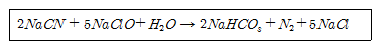
- 180.4
- 322.4
- 344.8
- 300.5
(정답률: 54%)
55. 침전지에서 입자의 침강 속도가 증대되는 원인이 아닌 것은?
- 입자 비중의 증가
- 액체 점성계수 증가
- 수온의 증가
- 입자 직경의 증가
(정답률: 67%)
56. 함수율 96%인 축산폐수 500m3/day가 혐기성소화조에 투입되고 있다. VS/TS비는 50%이며 혐기성 소화 후 VS 물질의 80%가 가스로 발생하고 있다. 이 소화조에서 하루 발생한 소화가스의 열량(kcal/day)은? (단, 축산폐수의 비중 1.0, VS 1ton은 25m3의 소화 가스를 발생, 소화가스 1m3의 열량은 6000kcal)
- 130000
- 400000
- 840000
- 1200000
(정답률: 48%)
57. 핀 플록(pin-floc)이나 플록파괴(deflocculation)가 발생하는 원인이 아닌 것은?
- 독성(toxic)물질 유입
- 혐기성(anaerobic) 상태
- 유황(sulfide)
- 장기폭기(extended aeration)
(정답률: 53%)
58. 막공법 중 물질 분리를 유발하는 추진력(driving force)으로 틀린 것은?
- 전기투석(Electrodialysis) - 기전력
- 투석(Dialysis) - 정수압차
- 역삼투(Reverse Osmosis) - 정수압차
- 한외여과(Ultrafiltration) - 정수압차
(정답률: 66%)
59. 함수율이 90%인 슬러지 겉보기 비중이 1.02이었다. 이 슬러지를 탈수하여 함수율이 60%인 슬러지를 얻었다면 탈수된 슬러지가 갖는 비중은? (단, 물의 비중 1.0)
- 약 1.09
- 약 1.19
- 약 1.29
- 약 1.39
(정답률: 34%)
60. Monod 식을 이용한 세포의 비증식속도(Specific growth rate, hr-1)는? (단, 제한기질농도 200mg/L, 1/2포화농도(Ks) 50mg/L, 세포의 비증식속도 최대치 0.1hr-1)
- 0.08
- 0.12
- 0.16
- 0.24
(정답률: 58%)
4과목: 수질오염공정시험기준
61. 자외선/가시선 분광법을 적용한 음이온계면활성제 시험방법에 관한 설명으로 틀린 것은?
- 메틸렌블루와 반응시켜 생성된 청색의 착화합물을 추출하여 흡광도를 측정한다.
- 컬럼을 통과시켜 시료 중의 계면활성제를 종류별로 구분하여 측정할 수 있다.
- 메틸렌블루와 반응시켜 생성된 착화합물을 추출할 때 클로로폼을 사용한다.
- 약 1000mg/L 이상의 염소이온 농도에서 양의 간섭을 나타내며 따라서 염분농도가 높은 시료의 분석에는 사용할 수 없다.
(정답률: 48%)
62. 유도결합플라스마-원자발광분광법에 대한 설명으로 가장 거리가 먼 것은?
- 토치는 2중으로 된 석영관을 사용한다.
- 냉각 가스는 아르곤을 사용한다.
- 운반 가스는 아르곤을 사용한다.
- 플라스마는 그 자체가 광원으로 이용된다.
(정답률: 46%)
63. BOD 실험에서 시료를 희석함에 있어 예상 BOD 값에 대한 사전 경험이 없을 때, 적용되는 경우에 대한 설명으로 옳은 것은?
- 오염이 심한 공장폐수는 1.0 ~ 5.0%의 시료가 함유되도록 희석, 조제한다.
- 침전된 하수는 5.0 ~ 10%의 시료가 함유되도록 희석, 조제한다.
- 처리하여 방류된 공장폐수는 25 ~ 50%의 시료가 함유되도록 희석, 조제한다.
- 오염된 하천수는 25.0 ~ 100%의 시료가 함유되도록 희석 조제한다.
(정답률: 64%)
64. 유속-면적법에 의한 하천유량을 구하기 위한 소구간 단면에 있어서의 평균유속 Vm을 구하는 식으로 맞는 것은? (단, V0.2, V0.4, V0.5, V0.6, V0.8은 각각 수면으로부터 전수심의 20%, 40%, 50%, 60%, 및 80%인 점의 유속이다. )
- 수심이 0.4m 미만일 때 Vm = V0.5
- 수심이 0.4m 미만일 때 Vm = V0.8
- 수심이 0.4m 이상일 때 Vm = (V0.2 + V0.8)×1/2
- 수심이 0.4m 이상일 때 Vm = (V0.4 + V0.6)×1/2
(정답률: 62%)
65. 공장폐수나 하수의 관내 유량측정방법 중 공정수(process water)에 적용하지 않는 것은?
- 유량측정용 노즐
- 벤튜리미터
- 오리피스
- 자기식 유량측정기
(정답률: 50%)
66. 염소이온에 관한 측정법에 대한 설명으로 가장 거리가 먼 것은?
- 정량 범위는 질산은 적정법 경우 0.1mg/L, 이온크로마토그래피법의 경우 0.7mg/L 이상이다.
- 질산은 적정법의 경우 시료가 심하게 착색되어 있으면 칼륨명반현탁액을 넣어 탈색시켜야 한다.
- 질산은 적정법에 의한 종말점은 엷은 적황색 침전이 나타날 때이다.
- 질산은 적정법은 질산은이 크롬산과 반응하여 크롬산은의 침전으로 나타나는 점을 적정의 종말점으로 한다.
(정답률: 46%)
67. 하천의 BOD를 측정하기 위해 검수에 희석수를 가해 40배로 희석한 것을 BOD병에 채우고 20℃에서 5일간 부란시키기 전 희석 검수의 DO는 8.5mg/L, 5일 부란 후 적정에 사용된0.025N-Na2S2O3 용액이 1.5mL, BOD병 내용적이 303mL, 적정에 사용된 검수량이 100mL, 0.025N-Na2S2O3의 역가는 1이다. 이 하천수의 BOD(mg/L)는? (단, DO측정을 위해 투입된 MnSO4와 알카리성 요오드화칼륨 아지드화나트륨 용액의 양은 각각 1mL로 한다.)
- 약 190
- 약 220
- 약 250
- 약 280
(정답률: 30%)
68. 자외선/가시선 분광법에 의한 페놀류 정량 측정에 관한 내용으로 ( )에 맞는 내용은?
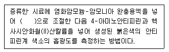
- pH 8
- pH 9
- pH 10
- pH 11
(정답률: 57%)
69. 수질시료를 보존할 때 반드시 유리용기에 넣어 보존해야 하는 측정항목이 아닌 것은?
- 폴리클로리네이티드비페닐
- 페놀류
- 유기인
- 불소
(정답률: 58%)
70. 공정시험기준의 내용으로 가장 거리가 먼 것은?
- 온수는 60~70℃, 냉수는 15℃ 이하를 말한다.
- 방울수는 20℃에서 정제수 20방울을 적하할 때, 그 부피가 약 1mL가 되는 것을 뜻한다.
- ‘정밀히 단다’라 함은 규정된 수치의 무게를 0.1mg까지 다는 것을 말한다.
- 시험에 쓰는 물은 따로 규정이 없는 한 증류수 또는 정제수로 한다.
(정답률: 64%)
71. 시료 채취 시 유의사항으로 틀린 것은?
- 시료 채취 용기는 시료를 채우기 전에 시료로 3회 이상 씻은 다음 사용한다.
- 유류 또는 부유물질 등이 함유된 시료는 균질성이 유지될 수 있도록 채취하여야 하며, 침전물 등이 부상하여 혼입되어서는 안 된다.
- 심부층의 지하수 채취 시에는 고속양수펌프를 이용하여 채취시간을 최소화함으로써 수질의 변질을 방지하여야 한다.
- 용존가스, 환원성 물질, 휘발성유기화합물, 냄새, 유류 및 수소이온 등을 측정하기 위한 시료를 채취할 때는 운반중 공기와의 접촉이 없도록 시료 용기에 가득 채운 후 빠르게 뚜껑을 닫는다.
(정답률: 64%)
72. 6가 크롬 표준용액(0.5mg/mL) 1L를 조제하기 위하여 소요되는 표준시약(다이크롬산칼륨)의 양(g)은 약 얼마인가? (단, 원자량 : 칼륨 39, 크롬 52)
- 1.413
- 2.826
- 3.218
- 4.641
(정답률: 23%)
73. 감응계수를 옳게 나타낸 것은? (단, 검정곡선 작성용 표준용액의 농도 : C, 반응값 : R)
- 감응계수 = R / C
- 감응계수 = C / R
- 감응계수 = R × C
- 감응계수 = C - R
(정답률: 64%)
74. 부유물질 측정 시 간섭물질에 관한 설명으로 가장 거리가 먼 것은?
- 유지(oil) 및 혼합되지 않는 유기물도 여과지에 남아 부유물질 측정값을 높게 할 수 있다.
- 철 또는 칼슘이 높은 시료는 금속 침전이 발생하며 부유물질 측정에 영향을 줄 수 있다.
- 나무 조각, 큰 모래입자 등과 같은 큰 입자들은 부유물질 측정에 방해를 주며, 이 경우 직경 2mm 금속망에 먼저 통과시킨 후 분석을 실시한다.
- 증발잔유물이 1000mg/L 이상인 공장폐수 등은 여과지에 의한 측정 오차를 최소화하기 위해 여과지 세척을 하지 않는다.
(정답률: 51%)
75. 다이페닐카바자이드를 작용시켜 생성되는 착화합물의 흡광도를 540nm에서 측정하여 정량하는 항목은?
- 니켈
- 6가 크롬
- 구리
- 카드뮴
(정답률: 60%)
76. 공장의 폐수 100mL를 취하여 산성 100℃에서 KMnO4에 의한 화학적 산소 소비량을 측정하였다. 시료의 적정에 소비된 0.025N KMnO4의 양이 7.5mL였다면 이 폐수의 COD(mg/L)는 약 얼마인가? (단, 0.025N KMnO4 factor 1.02, 바탕시험 적정에 소비된 0.025N KMnO4 1.00mL)
- 13.3
- 16.7
- 24.8
- 32.2
(정답률: 28%)
77. 식물성 플랑크톤의 정량시험 중 저배율에 의한 방법은? (단, 200배율 이하)
- 스트립 이용 계수
- 팔머-말로니 챔버 이용 계수
- 혈구계수기 이용 계수
- 최적 확수 이용 계수
(정답률: 56%)
78. 하천수의 시료채취에 관한 내용으로 가장 적절한 것은? (단, 수심 1.5m 기준)
- 하천 단면에서 수심이 가장 깊은 수면의 지점과 그 지점을 중심으로 좌우로 수면폭을 3등분한 각각의 지점의 수면으로부터 수심의 1/3 지점을 채수한다.
- 하천 단면에서 수심이 가장 깊은 수면의 지점과 그 지점을 중심으로 좌우로 수면폭을 3등분한 각각의 지점의 수면으로부터 수심의 1/2 지점을 채수한다.
- 하천 단면에서 수심이 가장 깊은 수면의 지점과 그 지점을 중심으로 좌우로 수면폭을 2등분한 각각의 지점의 수면으로부터 수심의 1/3 지점을 채수한다.
- 하천 단면에서 수심이 가장 깊은 수면의 지점과 그 지점을 중심으로 좌우로 수면폭을 2등분한 각각의 지점의 수면으로부터 수심의 1/2 지점을 채수한다.
(정답률: 53%)
79. 취급 또는 저장하는 동안에 이물질이 들어가거나 또는 내용물이 손실되지 아니하도록 보호하는 용기는?
- 밀봉용기
- 밀폐용기
- 기밀용기
- 압밀용기
(정답률: 63%)
80. 폭기조 내의 폐수 DO를 측정하기 위하여 시료 300mL를 취하여 윙클러 아지드법에 의하여 처리하고 203mL를 분취하여 0.025N Na2S2O3로 적정하니 3mL 소모되었다. 이 폐수의 DO(mg/L)는 약 얼마인가? (단, 0.025N Na2S2O3의 역가 1.2, 전체 시료량에 넣은 시약 4mL)
- 3.2
- 3.6
- 4.2
- 4.6
(정답률: 30%)
5과목: 수질환경관계법규
81. 위임업무 보고사항 중 보고 횟수가 연 4회에 해당되는 것은?
- 측정기기 부착 사업자에 대한 행정처분 현황
- 측정기기 부착사업장 관리 현황
- 비점오염원의 설치신고 및 방지시설 설치
- 과징금 부과 실적
(정답률: 45%)
82. 수질오염방지시설 중 화학적 처리시설에 속하는 것은?
- 응집시설
- 접촉조
- 폭기시설
- 살균시설
(정답률: 61%)
83. 상수원 구간의 수질오염경보(조류경보) 중 다음 발령기준에 해당 하는 경보단계는?
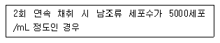
- 관심
- 경계
- 조류 대발생
- 해제
(정답률: 52%)
84. 수질 및 수생태계 상태를 등급으로 나타내는 경우, ‘좋음’등급에 대한 설명으로 옳은 것은? (단, 수질 및 수생태계 생활 환경기준)
- 용존산소가 풍부하고 오염물질이 거의 없는 청정상태에 근접한 생태계로 침전 등 간단한 정수처리 후 생활용수로 사용할 수 있음
- 용존산소가 풍부하고 오염물질이 거의 없는 청정상태에 근접한 생태계로 여과·침전 등 간단한 정수처리 후 생활용수로 사용할 수 있음
- 용존산소가 많은 편이고 오염물질이 거의 없는 청정상태에 근접한 생태계로 여과·침전 살균 등 일반적인 정수처리 후 생활용수로 사용할 수 있음
- 용존산소가 많은 편이고 오염물질이 거의 없는 청정상태에 근접한 생태계로 활성탄 투입 등 일반적인 정수처리 후 생활용수로 사용할 수 있음
(정답률: 56%)
85. 배출시설의 설치허가를 받은 자가 배출시설의 변경허가를 받아야하는 경우에 대한 기준으로 ( )에 내용으로 옳은 것은?
- 1일 500세제곱미터
- 1일 600세제곱미터
- 1일 700세제곱미터
- 1일 800세제곱미터
(정답률: 58%)
86. 수질오염감시경보의 발령, 해제 기준에 관한 내용으로 옳은 것은?
- 생물감시장비 중 물벼룩감시장비가 경보기준을 초과하는 것은 한쪽 시험조에서 15분 이상 지속되는 경우를 말한다.
- 생물감시장비 중 물벼룩감시장비가 경보기준을 초과하는 것은 한쪽 시험조에서 30분 이상 지속되는 경우를 말한다.
- 생물감시장비 중 물벼룩감시장비가 경보기준을 초과하는 것은 양쪽 모든 시험조에서 15분 이상 지속되는 경우를 말한다.
- 생물감시장비 중 물벼룩감시장비가 경보기준을 초과하는 것은 양쪽 모든 시험조에서 30분 이상 지속되는 경우를 말한다.
(정답률: 50%)
87. 1일 폐수배출량이 2000m3미만인 규모의 지역별, 항목별 배출허용기준이 틀린 것은? (단, 단위는 mg/L)
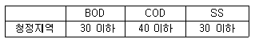
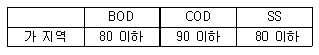
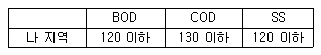
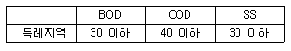
(정답률: 44%)
88. 폐수처리업의 등록기준에 관한 내용으로 틀린 것은?
- 하나의 시설 또는 장비가 두 가지 이상의 기능을 가질 경우에는 각각의 해당 시설 또는 장비를 갖춘 것으로 본다.
- 폐수수탁처리업, 폐수재이용업을 함께 하려는 때는 같은 요건이라도 업종별로 따로 갖추어야 한다.
- 수질오염물질 각 항목을 측정·분석할 수 있는 실험기기·기구 및 시약을 보유한 측정대행업자 또는 대학부설 연구기관 등과 측정대 행계약 또는 공동사용계약을 체결한 경우에는 해당 실험기기·기구 및 시약을 갖추지 아니할 수 있다.
- 기술능력이 환경기술인의 자격요건 이상이고 폐수 처리시설과 폐수배출시설이 동일한 시설인 경우에는 환경기술인을 중복하여 임명하지 아니하여도 된다.
(정답률: 45%)
89. 골프장의 잔디 및 수목 등에 맹·고독성 농약을 사용한 자에 대한 벌금 또는 과태료 부과 기준은?
- 3백만원 이하의 벌금
- 5백만원 이하의 벌금
- 3백만원 이하의 과태료 부과
- 1천만원 이하의 과태료 부과
(정답률: 56%)
90. 시·도지사가 측정망을 이용하여 수질오염도를 상시 측정하거나 수생태계 현황을 조사한 경우에 그 조사 결과를 며칠 이내에 환경 부장관에게 보고하여야 하는가?
- 수질오염도 : 측정일이 속하는 달의 다음 달 5일 이내, 수생태계현황 : 조사 종료일부터 1개월 이내
- 수질오염도 : 측정일이 속하는 달의 다음 달 5일 이내, 수생태계현황 : 조사 종료일부터 3개월 이내
- 수질오염도 : 측정일이 속하는 달의 다음 달 10일 이내, 수생태계현황 : 조사 종료일부터 1개월 이내
- 수질오염도 : 측정일이 속하는 달의 다음 달 10일 이내, 수생태계현황 : 조사 종료일부터 3개월 이내
(정답률: 42%)
91. 환경부장관이 수질 및 수생태계를 보전할 필요가 있다고 지정·고시하고 수질 및 수생태계를 정기적으로 조사·측정하여야 하는 호소의 기준으로 틀린 것은?
- 1일 30만톤 이상의 원수를 취수하는 호소
- 만수위일 때 면적이 30만 제곱미터 이상인 호소
- 수질오염이 심하여 특별한 관리가 필요하다고 인정되는 호소
- 동식물의 서식지·도래지이거나 생물다양성이 풍부하여 특별히 보전할 필요가 있다고 인정되는 호소
(정답률: 60%)
92. 중점관리 저수지의 지정 기준으로 옳은 것은?
- 총저수용량이 1백만세제곱미터 이상인 저수지
- 총저수용량이 1천만세제곱미터 이상인 저수지
- 총저수면적이 1백만제곱미터 이상인 저수지
- 총저수면적이 1천만제곱미터 이상인 저수지
(정답률: 47%)
93. 대통령령으로 정하는 처리용량 이상의 방지시설(공동방지시설 포함)을 운영하는 자는 배출되는 수질오염물질이 배출허용기준, 방류수수질기준에 맞는 지를 확인하기 위하여 적산전력계 또는 적산유량계 등 대통령령이 정하는 측정기기를 부착하여야 한다. 이를 위반하여 적산전력계 또는 적산유량계를 부착하지 아니한 자에 대한 벌칙 기준은?
- 1000만원 이하의 벌금
- 500만원 이하의 벌금
- 300만원 이하의 벌금
- 100만원 이하의 벌금
(정답률: 42%)
94. 폐수처리업자의 준수사항에 관한 설명으로 ( )에 옳은 것은?
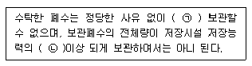
- ㉠ 10일 이상, ㉡ 80%
- ㉠ 10일 이상, ㉡ 90%
- ㉠ 30일 이상, ㉡ 80%
- ㉠ 30일 이상, ㉡ 90%
(정답률: 53%)
95. 공공폐수처리시설의 유지·관리기준에 관한 사항으로 ( )에 옳은 내용은?
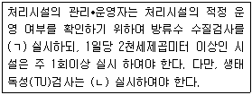
- ㉠ 월 2회 이상, ㉡ 월 1회 이상
- ㉠ 월 1회 이상, ㉡ 월 2회 이상
- ㉠ 월 2회 이상, ㉡ 월 2회 이상
- ㉠ 월 1회 이상, ㉡ 월 1회 이상
(정답률: 59%)
96. 비점오염저감시설 중 자연형 시설에 해당되는 것은?
- 생물학적 처리형 시설
- 여과시설
- 침투시설
- 와류시설
(정답률: 54%)
97. 오염총량관리시행계획에 포함되어야 하는 사항으로 가장 거리가 먼 것은?
- 오염원 현황 및 예측
- 오염도 조사 및 오염부하량 산정방법
- 연차별 오염부하량 삭감 목표 및 구체적 삭감 방안
- 수질 예측 산정자료 및 이행 모니터링 계획
(정답률: 33%)
98. 수변생태구역의 매수·조성 등에 관한 내용으로 ( )에 옳은 것은?
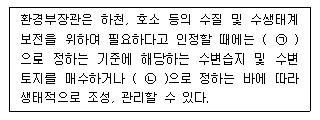
- ㉠ 환경부령, ㉡ 대통령령
- ㉠ 대통령령, ㉡ 환경부령
- ㉠ 환경부령, ㉡ 총리령
- ㉠ 총리령, ㉡ 환경부령
(정답률: 63%)
99. 수질오염경보 중 조류경보 시 취수장·정수장 관리자의 조치사항에 해당하는 것은?
- 주 2회 이상 시료채취·분석
- 정수의 독소분석 실시
- 발령기관에 대한 시험분석결과의 신속한 통보
- 취수구 및 조류가 심한 지역에 대한 방어막 설치 등 조류 제거 조치 실시
(정답률: 43%)
100. 비점오염원의 설치신고 또는 변경신고를 할 때 제출하는 비점 오염저감 계획서에 포함되어야 하는 사항으로 가장 거리가 먼 것은?
- 비점오염원 관련 현황
- 비점오염저감시설 설치계획
- 비점오염원 관리 및 모니터링 방안
- 비점오염원 저감방안
(정답률: 45%)
BOD 1kg을 제거하는데 필요한 공기공급량이 60m3 이므로, 2400kg를 제거하기 위해서는 2400 x 60 = 144000m3의 공기가 필요하다.
시간당 공기공급량을 구하기 위해서는 이 값을 24시간으로 나누어야 한다. 따라서, 144000m3 ÷ 24시간 = 6000m3/시간이 된다.
따라서, 시간당 공기공급량은 1500이 된다.